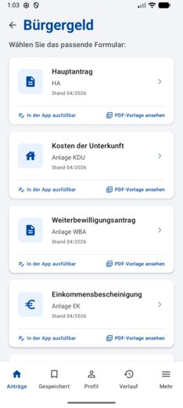
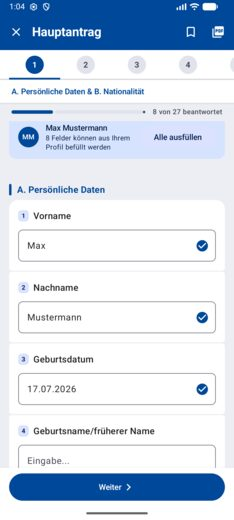
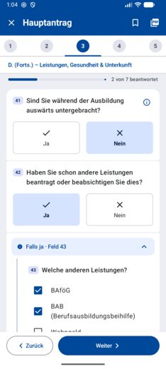
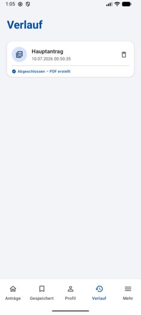
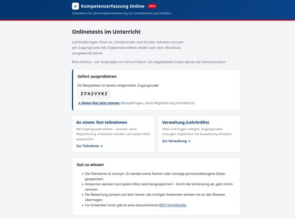
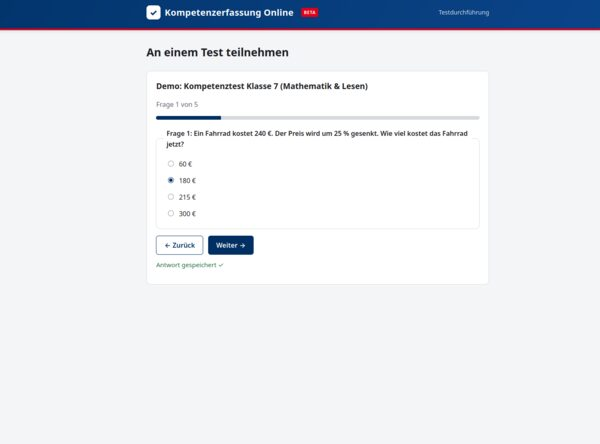
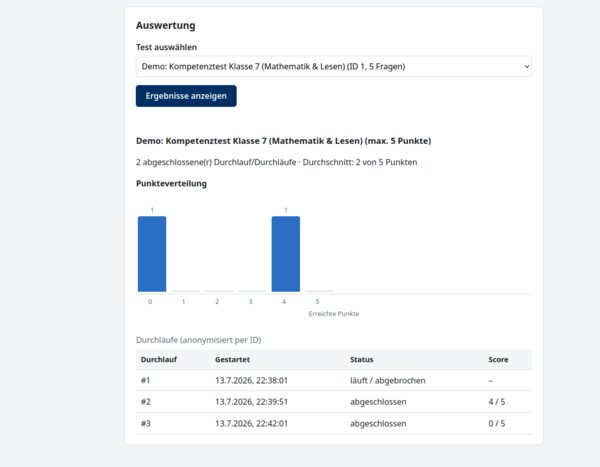
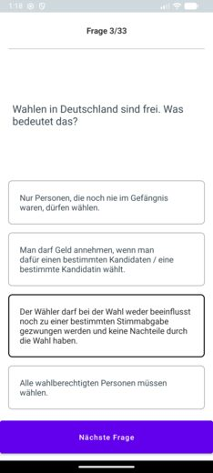

App-Entwickler @Otto seit 2020 — mit 8 Jahren Berufserfahrung als Softwareentwickler und abgeschlossenem Bachelor of Science. Starker Fokus auf Barrierefreiheit. Außerdem echtes Faible für deutsche Behörden und Papierkram — und Freude daran, Tools zu bauen, die anderen dabei helfen, da durchzukommen.
Der Behördenhelfer hilft Menschen — insbesondere Menschen mit Barrieren wie z. B. mangelnden Deutschkenntnissen — beim Ausfüllen von Anträgen. Aktuell werden die Anträge Bürgergeld mit den Anlagen EK, VM, WBA und KDU sowie Kindergeld unterstützt. Die App dient dabei als Brücke: Sie übersetzt die von den Behörden bereitgestellten Antragsformulare automatisch aus dem Backend in native Formulare innerhalb der App. Dadurch kann ein besonderer Fokus auf UX, Barrierefreiheit und Mehrsprachigkeit gelegt werden. Nachdem die Nutzerin oder der Nutzer die Felder ausgefüllt hat, übersetzt die App die Eingaben zurück in das offizielle PDF, das anschließend an die zuständige Behörde übermittelt werden kann.




Ein kleines Web-Tool für Onlinetests mit Schulklassen. Lehrkräfte legen Multiple-Choice-Tests an und erhalten einen Zugangscode; Schüler:innen nehmen anonym über diesen Code auf ihrem eigenen Gerät teil, jede Antwort wird sofort gespeichert, sodass bei einer unterbrochenen Verbindung nichts verloren geht. Die Bewertung läuft komplett serverseitig, Ergebnisse stehen direkt nach Abschluss bereit — inklusive Punkteverteilung für die ganze Klasse.



Eine Android-App zum Üben für den offiziellen Einbürgerungstest — der vollständige Katalog mit 33 Fragen direkt auf dem Handy statt auf Papier, mit sofortigem Feedback zu jeder Multiple-Choice-Antwort.
